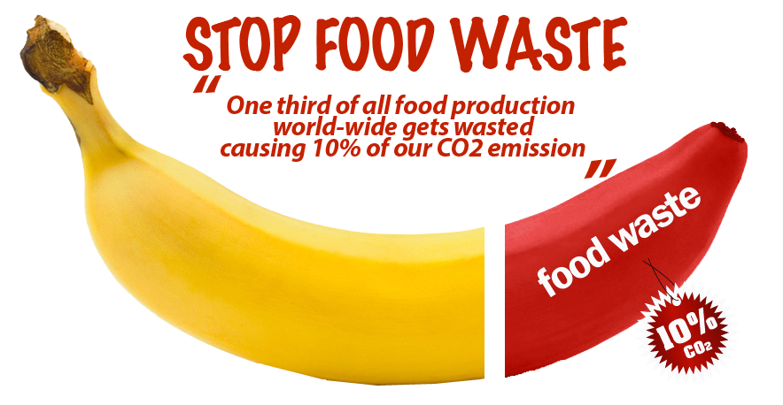
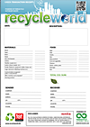
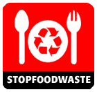
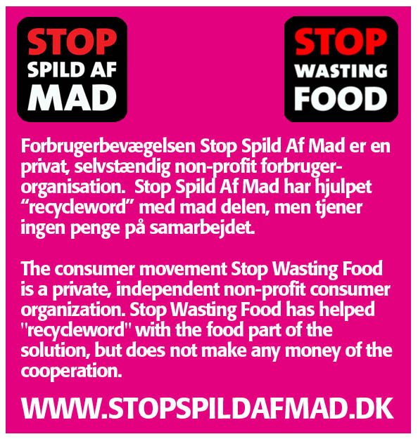

<div data-role="view" id="food-tabstrip" data-title="Food donation" data-show="TranslateApp" style="background-color: #f3f3f3;">

    <div data-role="content">
        <!--  indhold -->
        <table width="100%" cellpadding="8">
            <tr>
                <td >
                 
                        <h3><label for="foodindhold9" data-localize="foodindhold9">
                            Are you an organisation and help others
                             </label></h3>
                    <div>
                        
                    </div>
                    <label for="foodindhold10" data-localize="foodindhold10"   >
                        Are you a shelter, a home for people in social need etc. and u could use a food
                        donation. Then submit your place as a "stop food waste" donation spot. Then can
                        people, companies and others find you and support your place. <br>
                        <br>
                        But please take it serious - and consider if you really are in need - what you take,
                        cant benefit others.
                    </label>
                    <br><h3> <label for="titeltext_aboutfood" data-localize="titletext_aboutfood" >
                            About Food donation
                     </label></h3>
                     
                     
                    <label for="foodindhold" data-localize="foodindhold"    >
                        Find a location near you where you can donate your surplus products. All locations
                        with the following symbol should be an organisation, shelter, or someone who cares
                        about those who have least.
                    </label>

               
                      <h3>
                        <label for="foodindhold1" data-localize="foodindhold1" >
                            Facts about food waste
                           </label></h3>
                    <label for="foodindhold" data-localize="foodindhold2" >
                        From food waste for food assistance. There are in Denmark destroyed thousands of
                        tons of good, edible food that could have been eaten. All though an invistigation
                        by the Labour Movement showed that in Denmark alone, 300,000 people live below the
                        OECD poverty line. Additionally, we have approximately 5,000 homeless people in
                        Denmark and the number of poor is increasing in step with the social services are
                        cut. It's not embarrassing to give good food you have in excess, to the homeless
                        and the socially excluded - it is a good deed.
                    </label><br>
                     <h3>
                     <label for="foodindhold3" data-localize="foodindhold3">
                            What can you donate
                          </label></h3>
                    <label for="foodindhold4" data-localize="foodindhold4"  >
                        You can donate for example, unopened canned foods, unopened juice, vacuum packed
                        and unopened food (which has been stored correctly), etc. Not food that is past
                        its sell-by date. Many individuals, businesses, retailers, restaurants, caterers
                        and caterers have already begun to donate their good and fresh surplus food to the
                        homeless.
                    </label><br>
                     
                     <h3><label for="foodindhold5" data-localize="foodindhold5" >
                            Share your excess food & inventory
                          </label></h3>
                    <label for="foodindhold6" data-localize="foodindhold6"  >
                        Obvious it is also to share your backyards surplus of fruit - why let it perish,
                        and just rotten. Why do give it to the birds what could have been a meal in people's
                        stomachs. Take a picture of your apple tree, your plum trees, or whatever you grow
                        and which others could get joy of. Place it on recycleworld and wait for others
                        to come and enjoy your largeness and sharing.
                    </label><br><h3>                    
                        <label for="foodindhold7" data-localize="foodindhold7" >
                            Invitation to companies, retailers, restaurants, caterers, businesses and individuals
                     </label></h3>                    <div>
                        
                    </div>
                    <br>
                    <label for="foodindhold8" data-localize="foodindhold8"  >
                        Many of Stop Wasting Food members have already begun to donate their good surplus
                        food to the homeless and socially excluded. Remember that it is an absolute must
                        that leftovers must be 100% fresh and properly chilled. Read the instructions from
                        the Food & Drug Administration.
                    </label><br><br>
                </td>
            </tr>
        </table>

    </div>
</div>
      